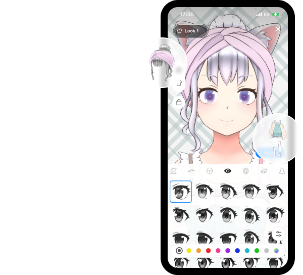

用 Reality 搭一条虚拟主播流水线：从捏脸到游戏实况的完整落地
讲一个把 Reality 嵌进每周直播工作流的实操方案：旧流程卡在哪里、新流程怎么串起手机+OBS+mocopi、最容易断链的两个环节怎么处理，以及这套流水线什么时候划算。
我每周要做两场虚拟主播直播，一场杂谈一场游戏，以前这套流程要在手机、电脑、动捕设备之间来回切三次，手动复制粘贴至少四次——现在把 Reality 嵌进去之后，整条链只在开播前花十五分钟准备，中间不用碰任何切换。
旧流程的卡壳点
说清楚旧流程长什么样，你就能理解为什么要换成 Reality 了。
捏脸：以前用另一款工具从零调一个虚拟形象，光眼睛样式就纠结了两天，调完还要导出 VRM 文件再导入到直播软件里，中间遇到过格式不兼容导致形象变形，返工了一整天。
游戏画面推流：杂谈还好，直接手机开播就行；但游戏实况要把电脑画面送进直播间，以前用 OBS 自带推流地址，手动去直播软件后台复制推流码，每次开播都要重新贴一次——OBS 关掉再打开就丢了。
表情追踪：旧方案用的是通用 VTS + 手机摄像头，偶发性的追踪延迟在直播里特别明显，观众一眼能看出口型和声音对不上，得重开追踪进程才能解决。
这三件事加在一起，每场直播开播前的准备时间在四十分钟以上，有时候遇上设备驱动崩溃，半小时就没了。
新流程：把 Reality 插进哪几环
换成 Reality官网 之后整条链拆成五个环节，每个环节只负责一件事，上下游衔接基本不需要手动干预。
第一环：快速捏一版能用的形象
Reality 的捏脸界面是"分类选项卡 + 大量预设"的结构，脸型、眼睛、眉毛、嘴巴、发型、肤色逐个点进去挑，每个分类都有几十种预设选项，不用任何美术基础，按"选一选试一试"的节奏来。我第一版形象大概花了十五分钟捏完，之后边播边微调，累计调整时间不超过一小时。
捏完之后切到表情确认环节，对着前置镜头做三个动作：眨眼、张嘴说话、左右转头——检查眼睛是否同步、口型是否跟上、头部朝向是否自然。如果某个部位不动，先确认整张脸是否完整在镜头视野里，再排查光线有没有遮挡。

第二环：mocopi 全身动捕
Reality 支持联动 Sony mocopi 全身动捕设备。六个传感器分别绑在头、双肩、双手、双脚，手机 App 负责采集动捕数据，Reality 应用直接消费——不需要中间转 VMC 协议，不需要额外的转发软件。这一环解决了"坐着播还行，站起来或者走两步形象就卡成 PPT"的老问题。
第三环：手机开播
这一步和普通直播一样，打开 Reality 应用点开播按钮，形象就直接出现在直播间里了。表情追踪由应用内建的前置镜头完成，不需要额外配置。
第四环：电脑推游戏画面
这是整个流水线最关键的衔接点。Reality 提供了官方的 OBS 插件——REALITY OBS Plugin，先从官方下载拿到插件包，在 OBS 里输入 OBS 连结 Token 就能绑定账号。Token 从网页版的游戏实况页面复制，OBS 关掉再打开也不需要重新输一次。绑定完成后，OBS 里设置好要播的画面源（游戏窗口、显示器、浏览器窗口都行），开播时从 OBS 插件侧点"开始直播"，游戏画面就会直接送进你的 Reality 直播间，和虚拟形象同框呈现。
第五环：下播收尾
结束整场直播直接点手机应用右上角的结束按钮。如果只想停掉游戏画面、保留杂谈直播，在 OBS 的 REALITY 窗口点"停止直播"就行，不影响手机端继续播。
实操细节：两个最容易断链的环节
整条链跑下来，我遇到过两个反复出问题的地方，整理一下处理方案。
环节一：游戏实况的门槛检查
Reality 的游戏实况不是对所有主播开放。使用前要先核对三个条件：主播段位在 D1 以上（新号先播出段位）、应用内地区设置限定为日本/美国/韩国/台湾之一、游戏内容符合官方直播指导方针。我第一次用的时候地区设置没改，OBS 插件明明装好了却推不上去，去Reality文档翻了一下才弄明白是地区门槛。
另外游戏实况有每月 30 小时的时长上限，每月 1 日日本时间零点重置。剩余时长可以在开播前的画面或者网页版游戏实况页面确认。超过时长再开播，插件侧会报错，不会偷偷断流。
还有一个容易踩的坑：游戏实况只有直播主办者能用，作为嘉宾参加联动的时候是用不了的。之前和朋友联动播游戏，我作为嘉宾想推画面，折腾了半小时才反应过来权限不在我这。
环节二：年龄验证触发后的应急
Reality 对年龄有明确门槛，未满 13 岁不可使用。如果应用通过举报、直播发言或自我介绍判断"可能未满 13 岁"，会弹出 k-ID 年龄验证要求。验证带完成期限，逾期账号会被暂停，暂停后补完验证就能恢复。我朋友的号因为弹幕里说了一句"我还在上小学"被触发了验证，当时正在播，好在验证有宽限期，下播后补完就没事了。
验证失败的常见原因：网络环境差、应用版本旧、摄像头权限没开、环境太暗。换到光线好的地方、更新应用、确认权限后重试就行，验证次数有上限，别连续狂点。
效果与边界
跑了一个月之后，这条流水线带给我的实际变化：
- 开播前的准备时间从四十分钟降到十五分钟以内，少了至少三次手动复制粘贴操作
- 表情追踪延迟问题彻底消失，应用内建的追踪在光线正常的环境下稳定度很高
- 游戏画面和形象同框推送，不需要任何中间格式转换，画质和延迟都比旧方案好
但这套流程也不是万能的。mocopi 全身动捕需要额外购买设备（六个传感器加手机），如果只播坐着不动的杂谈场景，这项投入完全没必要。游戏实况的 30 小时月限对高强度主播可能不够用，这种情况下得考虑分账号或者换平台。OBS 插件虽然比旧方案方便，但还是需要电脑端额外操作，纯手机直播用户用不上这一环。
总的来说，Reality 适合每周固定场次、需要游戏+杂谈混合直播、愿意花时间搭一次完整流水线的主播。一次搭好之后，每次开播就是"手机点开播 + OBS 点推流"两步，省下的时间和精力可以直接转化为直播内容的质量。
这套资料我顺手同步了三份——GitHub 是主线版本，国内访问怕延迟的话直接去Gitee 或者GitCode 拿就行，三份内容完全一致。